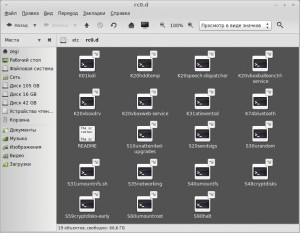

Выполнение скрипта при запуске или выключении linux
Если на вопрос: «как добавить программу в автозагрузку?» — начинающие пользователи находят ответ достаточно быстро, то вопрос о запуске скрипта, при выключении/перезагрузки, ставит их в тупик. В статье будет описан стандартный способ для автоматического выполнения команд при включении и выключении linux, а также более простой способ для пользователей, у которых установлен gdm и графический интерфейс, например ubuntu.
Консольный вариант.
Немного теории.
Следует знать, что в Linux существует 7 уровней запуска. Однако, использоваться могут только 6.
Как у всех уважающих себя программ отсчёт начинается с 0-ля.
0 — Остановка или выключение системы.
1 — Однопользовательский режим.
2 — Многопользовательский режим, но без поддержки сети.
3 — Тоже самое, но с сетью.
4 — Добавили для красоты Не используется.
5 — Графический режим с загрузкой X сервера.
6 — Перезагрузка.
Если перейти в папку /etc (В некоторых дистрибутивах /etc/rc.d) то можно увидеть папки с 7-мью уровнями запуска.
Например при выключении компьютера, выполнятся все скрипты из папки rc0.d

Тут следует остановится по подробнее. Дело в том, что самих скриптов (а точнее сценариев) в этой папке нету, а есть только ссылки на файлы, которые лежат в папке /etc/init.d. Эти сценарии выполняют различные задачи, в зависимости от параметра start или stop (например /etc/init.d/reboot start и /etc/init.d/reboot stop это разные команды, а /etc/init.d/reboot вообще не будет работать). Если в ссылке стоит первая буква S, то значит сценарию подаётся параметр start, а если стоит буква K(от слова kill), то параметр stop. Цифра после буквы обозначает порядок выполнения сценария.
Например, на выше вставленном скриншоте вначале выполниться команда /etc/init.d/hddtemp stop, а уже позже /etc/init.d/networking start.
Хватит теории. Переходим к практике.
Для того, чтобы добавить команду в автозагрузку, достаточно поместить её в файл /etc/rc.local.
В этой части статьи в качестве редактора будет использоваться nano, но вы можете пользоваться своим любимым редактором, например gedit.
И помещаем наши команды чуть выше строчки с exit 0.
Для того, что бы команды выполнялись перед выключением или перезагрузкой нам нужно создать сценарий в папке /etc/init.d
sudo nano /etc/init.d/имя_сценария
Вставляем следующий код:
#! /bin/sh
case "$1" in
start)
echo "подан сигнал start"
;;
stop)
echo "подан сигнал stop"
;;esac
Если будет подаваться только один сигнал, то просто закомментируйте строку поставив в начале команды знак #
Например
Теперь делаем файл исполняемым:
sudo chmod +x /etc/init.d/имя_сценария
Создать ссылки можно вручную, но проще это сделать через команду update-rc.d
Например:
sudo update-rc.d имя_сценария start 20 0 6 . stop 1 0 6 .
Точки важны (обе). Исследуя просторы интернета, у меня сложилось впечатление, что синтаксис этой программы иногда меняется. Актуальные примеры можно посмотреть по команде «man update-rc.d». Примеры будут в низу.
Эта команда создаст по 2 ссылки в каталогах /etc/rc0.d (второе число в команде) и /etc/rc6.d (третье число в команде). Причём вначале будет выполняться сценарий с параметром stop (т.к. стоит 1), а уже потом с параметром start (т.к. стоит 20).
Если второй параметр не нужен, то можно выполнить команду:
sudo update-rc.d имя_сценария stop 1 0 6 .
Советую ставить приоритет повыше (т.е. число после start или stop должно быть маленьким), желательно меньше 20. В обратном случае у меня иногда зависал компьютер при попытке перезагрузиться.
Для пользователей ubuntu, да и многих других современных дистрибутивов с gdm можно воспользоваться…
Графический вариант.
Что касается автозагрузки то можно воспользоваться способом описанным здесь.
Или просто открыть «автоматически запускаемые приложения» командой:
Для выполнения скрипта при выключении компьютера, помещаем его в файл /etc/gdm/PostSession/Default
sudo gedit /etc/gdm/PostSession/Default
Прямо над строчкой exit 0.